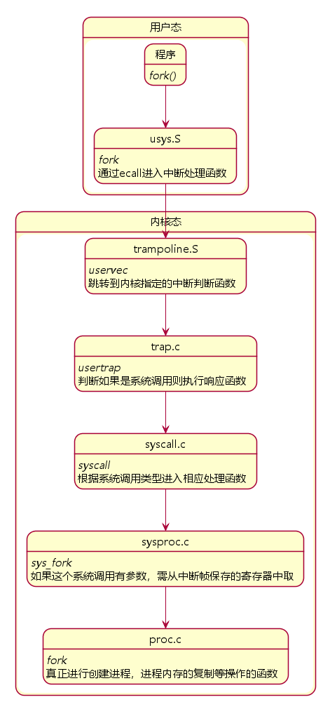

咕咕了一周多，今天总算把Lab2做完了。
Lab2主要加深对系统调用的理解，做完确实学到了很多东西。
这个Lab有两个任务：添加一个系统调用trace和系统调用sysinfo，实现的重点也和Lab1的写代码变成了理解内核代码。资料方面需要读完xv6book的第二章和第四章的第三节与第四节，并且要熟悉对应的源码：
- 系统调用的用户空间代码：
user/user.h和user/usys.pl - 内核空间代码：
kernel/syscall.h，kernel/syscall.c - 进程相关的代码：
kernel/proc.h和kernel/proc.c
实验的地址在这里
System call tracing
这个任务需要添加一个系统调用trace来追踪一个特定的系统调用的调用过程。在xv6中，每一个系统调用都有一个对应的编号，比如fork对应的编号SYS_fork值为1，而trace通过掩码的形式来追踪特定的系统调用，例如追踪fork，则调用trace(1 << SYS_fork)，如果追踪到了就要输出进程id、系统调用的名称和返回值，并且trace还应该对子进程进行追踪。
这张图比较清晰的描述了系统调用的流程：
根据任务提示，我们首先应该像lab1一样在Makefile中添加$U/_trace到 UPROGS。
然后分别在对应的文件中添加trace的相关声明：
//user/user.h
int trace(int);
//user/usys.pl
entry("trace");
//kernel/syscall.h
#define SYS_trace 22
//kernel/syscall.c:107
extern uint64 sys_trace(void);从教程或者生成的usys.S中，可以看到li a7, SYS_trace，说明系统调用号被存在了寄存器a7中，所以在kernel/syscall.c中，syscall函数通过p->trapframe->a7来获取系统调用的类型，然后通过函数指针的方式调用对应的系统调用函数。
接下来需要实现sys_trace这个函数，首先需要在kernel/proc.h中给proc这个结构体添加一个掩码mask，然后需要从寄存器里面取出它，需要使用到argint这个函数，具体实现如下：
//kernel/sysproc.c
uint64 sys_trace(void)
{
int mask;
if(argint(0, &mask) < 0) return -1;
myproc() -> mask = mask;
return 0;
}为了能够追踪子进程，我们需要修改fork函数，将mask直接传递下去就行
//kernel/proc.c
//add in fork()
np->mask = p->mask;接下来需要打印信息，修改syscall函数，记得函数的返回值是在a0寄存器中：
void syscall(void)
{
int num;
struct proc *p = myproc();
num = p->trapframe->a7;
if(num > 0 && num < NELEM(syscalls) && syscalls[num])
{
p->trapframe->a0 = syscalls[num]();
//只增加下面这一行就行
if((1<<num) & p->mask) printf("%d: syscall %s -> %d\n", p->pid, syscalls_name[num], p->trapframe->a0);
}
else
{
printf("%d %s: unknown sys call %d\n",p->pid, p->name, num);
p->trapframe->a0 = -1;
}
}为了输出系统调用的名称，还应该新增一个数组来保存对应的值。
char* syscalls_name[] = {
[SYS_fork] "fork",
[SYS_exit] "exit",
[SYS_wait] "wait",
[SYS_pipe] "pipe",
[SYS_read] "read",
[SYS_kill] "kill",
[SYS_exec] "exec",
[SYS_fstat] "fstat",
[SYS_chdir] "chdir",
[SYS_dup] "dup",
[SYS_getpid] "getpid",
[SYS_sbrk] "sbrk",
[SYS_sleep] "sleep",
[SYS_uptime] "uptime",
[SYS_open] "open",
[SYS_write] "write",
[SYS_mknod] "mknod",
[SYS_unlink] "unlink",
[SYS_link] "link",
[SYS_mkdir] "mkdir",
[SYS_close] "close",
[SYS_trace] "trace",
[SYS_sysinfo] "sysinfo",
};这样第一个任务就做完了。
Sysinfo
和任务一相似，首先添加声明：
//user/user.h
int sysinfo(struct sysinfo *);
//user/usys.pl
entry("sysinfo");
//kernel/syscall.h
#define SYS_sysinfo 23
//kernel/syscall.c:108
extern uint64 sys_sysinfo(void);查看sysinfo这个结构体，发现只有两个参数，一个是保存空闲内存信息，一个是保存正在运行的进程数目。根据提示，我们需要自己实现两个函数来获取这两个参数的值。
获取可用内存
阅读kernel\kalloc.c，可以发现可分配物理内存其实是用一个链表实现的，每个节点的大小都是4096，申请内存时，将链表的头部节点分出去然后向后移一位。那么获取可用的内存就很简单了，直接输出链表内的非空节点数*4096即可。
//kernel/kalloc.c
uint64 free_mem(void)
{
struct run *r = kmem.freelist;
uint64 num = 0;
while (r)
{
num++;
r = r->next;
}
return num * PGSIZE;
}获取进程数目
这个更简单了，根据提示，只要把state等于UNUSED的进程排除掉就行了。
//kernel/proc.c
int nproc(void)
{
struct proc *p;
int num = 0;
for(p = proc; p < &proc[NPROC]; p++)
if(p -> state != UNUSED) num++;
return num;
}完成了上面两个函数后，就可以实现sys_sysinfo了。
首先把那两个函数的声明添加到kernel\defs.h，根据提示，需要使用copyout这个函数将sysinfo复制回用户空间，具体实现如下：
//kernel/sysproc.c
uint64 sys_sysinfo(void)
{
struct sysinfo info;
struct proc *p = myproc();
uint64 addr;
if(argaddr(0,&addr) < 0) return -1;
info.freemem = free_mem();
info.nproc = nproc();
if(copyout(p->pagetable, addr, (char *)&info, sizeof(info)) < 0) return -1;
return 0;
}这样整个lab就做完了。
总结
如果说新人任务的shell是让你知道什么是系统调用和怎么用，那么这个lab则是告诉你系统调用的具体原理，包括内核空间与用户空间，ecall指令和trapframe，还有页表等等许多知识，确实受益匪浅。